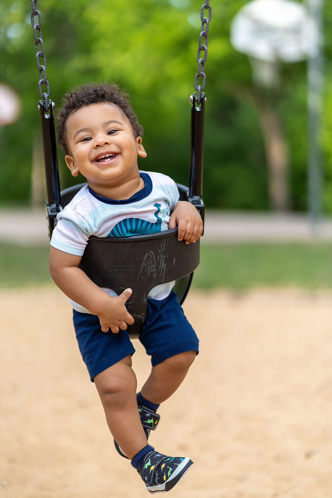
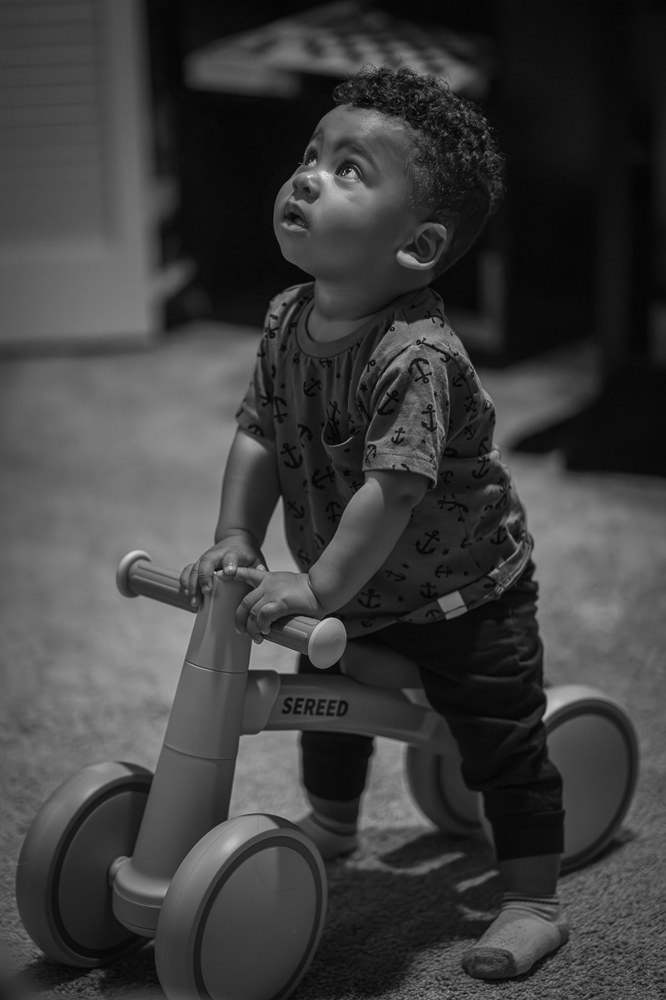

Petite Focus Studio
Together & Timeless
Capturing genuine emotion and enduring contrast — where colors fade, but stories endure.
View the Gallery
Featured Collection
Family — In Black & White
Photography is a testament to the moments we cherish most — and nothing holds greater significance than family. This collection gathers a selection of candid, heartfelt images captured over the years; each frame holds a quiet weight of connection, joy and the beauty of an ordinary day, shared.
From still afternoons at home to vibrant celebrations and spontaneous adventures, these images reflect timeless memories that continue to shape my work. You are invited to look closely and feel the warmth that defines my approach.

